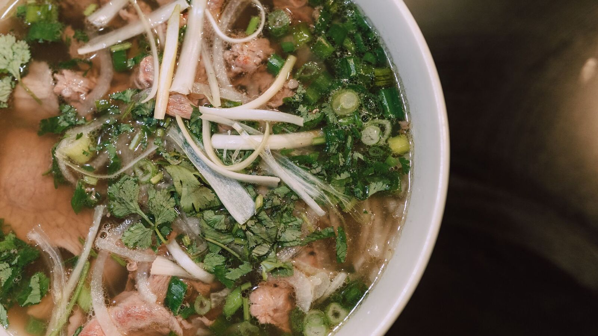

- Counter service, eight tables
- Takeout all day
- In American Fork since 2019
Who we are
A small family kitchen doing one thing properly: broth that starts the night before, bread baked the same morning, and a short menu that changes when the market does.
Counter service, eight tables, takeout all day. We have been in American Fork since 2019. Ask about the daily special — it changes with whatever came in.
Find us
Hours
Loading…
Where
American Fork, Utah (a demo — there is no address to visit)